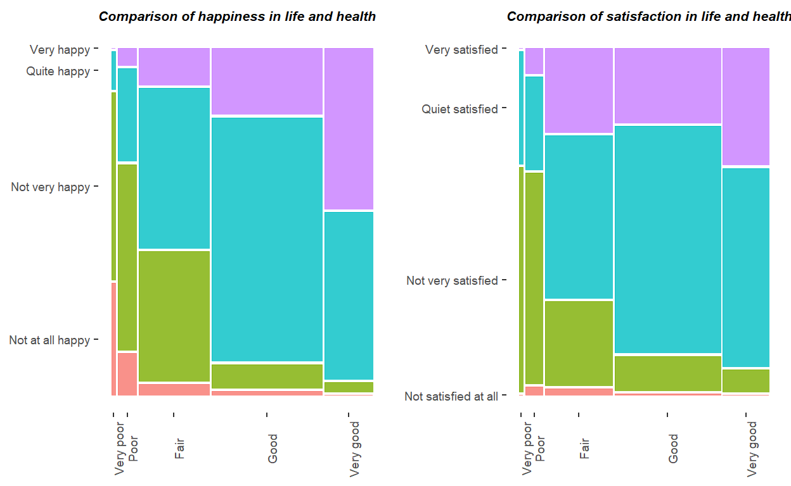
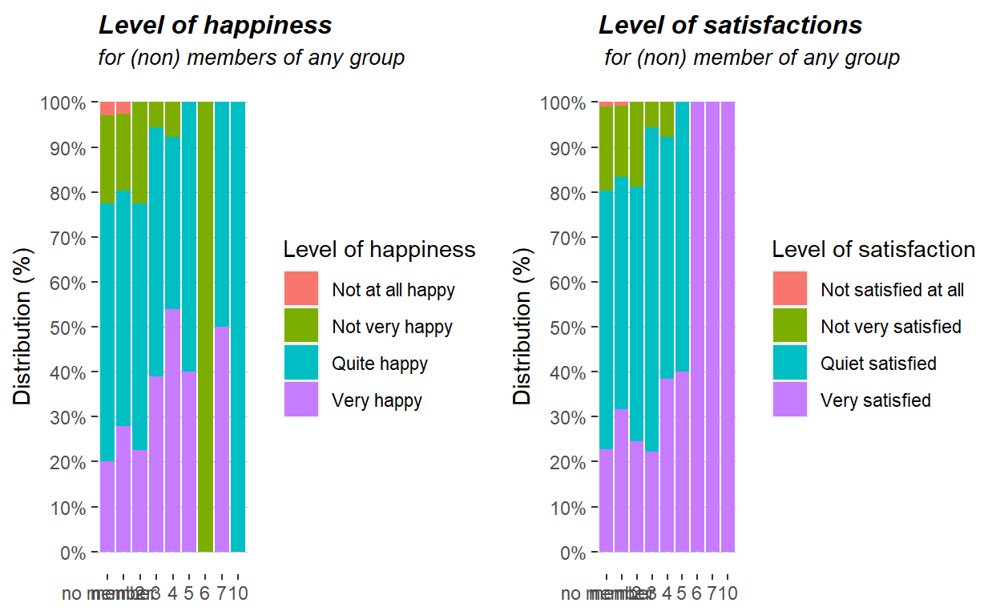

Download data
Download the data for the country you choose. You also find the official variable description file in the corresponding folder. Done.
First overview of data
Get acquainted with the data (rename and/or recode variables). The main variables with which we are going to work are measures of subjective well-being (SWB), namely general happiness and life satisfaction. Are these two variables comparable measures of SWB? How do these variables correlate with personal characteristics like income, health, age, marital status, etc.? Find suitable ways to show some possible (not necessarily causal) relationships.
A170 satisfaction in life
Min. 1st Qu. Median Mean 3rd Qu. Max.
1.000 6.000 8.000 7.528 9.000 10.000 The summary command allows us to have a rough overview of the variable A170 - satisfaction in life. The variable is scaled from 1 to 10, with 10 being the highest level of satisfaction. Since one can rank the level of satisfaction (e.g: a level of 8 being higher ranked than a level 2), but the distance between the levels is subjective (e.g: a person on a level 8 is not necessarily twice as happy as a person on the level 4) Life satisfaction can be considered an ordinarily scaled variable. The summary command shows, that everybody has replied to to questions (no NAs). Another conclusion which can be drawn from the summary command is the average level of satisfaction. With a median level of 8, and a mean of 7.5, the Romanian people are generally not extremely satisfied, but also not unsatisfied with their life as a whole. In addition to that, it can be seen, that the half of the asked population ranks themselves between a 6 and a 9.
The following plot allows a look at the distribution of satisfactionThe barplot on the distribution of satisfaction in life adds additional information to the summary command. As one can see, most people can identify with the highest level satisfied . It remains unclear, why there is such a rapid drop one level below. Furthermore it can be seen, that the lower 25% are much more distributed (from 2 to 5), whereas Satisfied contains all the upper 25% of the counts.
A008 Feeling of happiness
Min. 1st Qu. Median Mean 3rd Qu. Max.
1.000 3.000 3.000 2.962 3.000 4.000 Also the variable happy only contains interpretable values. Neither has nobody not answered, nor has the question being skipped, or other other problems occurred. The variable is scaled from 1 to 4. 1 indicates very happy, 4 indicates not at all happy. Identical to satisfaction, the feeling of happiness counts as a originally scaled variable.
The following barplot allows a closer look at the distribution of happiness within # the questioned people in RomaniaFrom the barplot one can conclude, that most people (approx. 56%) are quite happy, one fifth of the questioned population are very happy and roughly the same amount of people are not very happy, or not at all happy
Univariate and multivariate analysis of SWB Factors
In the following section we are going to provide a comparison of the two key variables with other variables.
Income
Min. 1st Qu. Median Mean 3rd Qu. Max.
1.000 3.000 4.000 3.867 5.000 10.000 The variable income was evaluated by showing the questioned households a range of income groups within their country, of which the participants had to select one. The income then got scaled from 1 (the 1st decile) and 10 (the highest decile).
The following two plots allow an insight in the income distribution of RomaniaIt can be seen, that the distribution is right skewed. This indicates, that the vast majority belongs to a lower income group. The boxplot shows, that 50% of the people lay in between the 3rd and the 5th decile.
The following mosaic plots shall provide an overview of the two main variables and the scaled income.The two mosaic plots allow a bivariate exploratory analysis among the variables income and happiness, as well as income and satisfaction. The comparison between income and satisfaction in life shows, that the group with the lowest income is the group has more very happy people, than the following 3 deciles. However by grouping quite happy and very happy into one category, as suggested by the second decile, it can then be seen that the lower three deciles make up for the lowest share. When analyzing the top 30% of income earners, we can see that almost everybody is at least quite happy. Also worth noting is that the top decile group of earners has less very happy people as decile group 7,8 & 9.
For a better overview, we grouped the levels of satisfaction into 1 = Not satisfied at all, 2-5 =not very satisfied, 6-9 = quiet satisfied and 10 = very satisfied.Comparing the satisfaction and the income, the group with the lowest income, again has one of the highest rates of satisfaction. Tough it should also be mentioned, that they also share one of the highest rates of Dissatisfaction. Once again it shows, that a higher income rules out the chance of being not satisfied at all. At the same time, the top 10% income group accounts for the lowest amount of very satisfied people.
Health
The average citizen seems to be in rather good health condition. Most of the answers group around the good health answer. The second most frequent answer is the fair health response. A very small percentage of respondents report being of poor or very poor health.

These mosaic plots show a connection between health of an individual and the satisfaction with life and overall happiness. Looking at happiness in life first, what stands out is, that those with poor and very poor health are to a large extent not very happy. This also translates to overall life satisfaction. Those with poor health are to a large extent not very satisfied. The opposite to this observation also holds true. Those with good and very good health are to a very large extent either very happy or quite happy. Respectively, those with good and very good health are also quite satisfied and very satisfied.
Age
Min. 1st Qu. Median Mean 3rd Qu. Max.
19.00 34.00 50.00 49.54 65.00 82.00 The summary command tells us the mean and the median age. Bothe are around 50. With the mean and the median age laying close together, one can say, that the distribution is rater equal. Since the age scaling end at the age of 82, one can not say, how old the oldest person in the dataframe is. The youngest however is at the age of 19.
In order to get a brief overview of the age distribution, a population pyramid can help.
The visualisation of age distribution separated by sex supports the insight, that there is no significant difference or trend in age distribution.
The boxplots show the distribution of age within the different levels of happiness and satisfaction. On the left graph it can be seen, that the median age increases, the less satisfied a person is. In the left graph it can be seen, that people who are not happy at all tend to be much older by median, than people who are very happy. For a less biased picture, we decided to split the level of happiness into male and female. It can be seen, that this does not make so big of a difference. However, a switch in the median age is observable, the less happy a person gets. The right boxplot shows that people with a satisfaction-level of 1 and 2 are almost solely over the age of 50. We can also note, that with satisfaction-levels of 3 and 4, the age is also quite high except for the lower 25 percentile in age and the lower outliers. Quite striking are the variances in the satisfaction-levels from 5 to 10, which span the whole age spectrum, although in general we can say that the higher the satisfaction-level the lower the median age
Marital status
Since it is not possible, to put the marital status in some kind of hierarchy, it can be considered a nominal scaled variable. The graph shows the distribution of people regarding their legal marital status. It can be seen, that the wide majority (60%) is married. The second and third highest population is formed by people who are single or have never been married (19%), and people who are widowed (15%).
The following mosaic plots are an attempt of a causal link between the marriage status, happiness and life satisfaction
It can be seen, that the widowed people are generally the ones who are rather not, or not happy at all. The single and married people are generally the biggest peopulation of people who are very happy.
The distribution of very satisfied people is quiet similar to the one seen in the previous plot. The same counts for the not very or not satisfied at all, with widowed people making up the largest population.
Additional variables
These additional variables also allow a little bit of insight into the data. Starting off with charitable causes we can see that those who mentioned being a member of a charitable organisation reported to be quite happy or very happy more often.
Being a member of a labor union also seems to have a certain connection to happiness as union members more often reported to be quite or very happy as opposed to non-members.
Interestingly, being a member of a religious organisation doesnt seem to increase happiness for all participants. It can be observed that those who are religious more often reported to be not very happy but at the same time religious respondents more often reported to be very happy. One way of interpreting this would be to assume that being religious could have a diverging effect on people and either increase or decrease their happiness according to some other external variable.
Looking at the variable of being a member of a self-help group, the graphs dont diverge as much as for other variables. Those who are members of a self-help group have a little more frequently reported to be quite happy than those who are not, but the effect is very small.
Finally, being a member of an activity. This seems to be connected to the effect of happiness as those who have reported to be member of any sort of activity rarely mentioned to be not very happy or not at all happy. Over 90% of respondents who mentioned to be member of an activity reported to be either very or at least quite happy.
Social Capital
The literature shows that Social Capital is an important factor for increasing the level of SWB. For the trust dimension of social capital you may use the variable asking whether people can generally be trusted or not, for the weak ties dimension you could use the sum of the variables asking whether one is a member of For the following section, we shall have a look at how the subjective well-being (SWB), namely general happiness and life satisfaction, are linked to Social Capital In order to take a closer look at the SWB, we shall take the term of the Social Capital into account. The literature shows that Social Capital is an important factor for increasing the level of SWB. But first of all, what is Social Capital? Social capital can be seen as a positive product of human interaction (investopedia.com). While it can not be owned by somebody, it is the result of connections between individuals within social networks. Social capital can be seen as a base pillar for the effective functioning of social groups. The absence of Social capital can mislead a group of people to not achieve a common goal or purpose. Despite its undeniable value for any group of individuals, there is no consensus on how social capital can be measured directly. This leads to the conclusion, that social capital can only be expressed through other indicators. The European Value Study (EVS) includes several indicators which can help to determine a countries Social Capital. In the following, we are going to consider trust as a key dimension for social capital. The EVS sees the trust variable as an indication whether most people can be trusted or not. in particular, the people participating in the survey get asked the following question: Generally speaking, would you say that most people can be trusted or that you cant be too careful in dealing with people? The answer is then separated into two possible answers (1) Most people can be trusted and (2) Cant be too careful. In the following diagram, we are going to provide an overview of the responses of the qualitative variable.
The following table depicts the distribution of the two levels of trust in Romania
As we can see from the pie chart and the table, people in Romania are generally rather careful. The vast majority (approx. 85%) expresses their trust in people on a level of cant be too careful. This rough overview already gives the impression, that the level of Social Capital is rather low in Romania.
The following graph provides an overview on how trust and happines in life, as well as trust and satisfaction are eventually linked.
Looking at the graph, it is hard to establish a clear trend within the data. Starting with the Happiness part of the diagram, it can roughly be said, that those who are very or quite happy with their lives tend to trust their fellow citizens more on average.
A similar trend cannot really be observed in the case for satisfaction. Here, dissatisfied participants seem to trust their fellow citizens more. While there are differences in the level of trust, its not possible to observe a trend.
Furthermore it needs to be stated, that the overall level of trust rarely exceeds 20% with a maximum of 30% being reached only once.
Besides the trust factor, analyzing weak ties can also help to get an impression of the Social Capital among the Romanian people. The term weak ties implies connections among individuals which one does not know very well, but by whom one is surrounded on a regular basis. In the EVS, the interviewers asked the participants weather they are a member of various groups. Let us therefor first have a very general overview of how the membership in any group can have on happiness and or life satisfaction. Note: for a better overview, the level of satisfaction has been grouped into 1: Not satisfied at all, 2-5: Not very satisfied, 6-9: Quite satisfied, 10: Very satisfied.

It can be seen, that on average members of any given organisation or institution are happier and more satisfied, than individuals who are not. This effect doesnt seem to change when looking at general happiness or life satisfaction.
Starting off with charitable causes we can see that those who mentioned being a member of a charitable organisation reported to be quite happy or very happy more often. Being a member of a labor union also seems to have a certain connection to happiness as union members more often reported to be quite or very happy as opposed to non-members.
Interestingly, being a member of a religious organisation doesnt seem to increase happiness for all participants. It can be observed that those who are religious more often reported to be not very happy but at the same time religious respondents more often reported to be very happy. One way of interpreting this would be to assume that being religious could have a diverging effect on people and either increase or decrease their happiness according to some other external variable.
Looking at the variable of being a member of a self-help group, the graphs dont diverge as much as for other variables. Those who are members of a self-help group have a little more frequently reported to be quite happy than those who are not, but the effect is very small.
Looking at sports groups, the effect on happiness seems to be surprisingly large. Those who reported to be members of sports groups are to a large extent either very happy or at least quite happy overall. Those two groups together constitute over 90% of those reporting to be member of a sports group or team.
Finally, being a member of an activity. This seems to be connected to the effect of happiness as those who have reported to be member of any sort of activity rarely mentioned to be not very happy or not at all happy. Over 90% of respondents who mentioned to be member of an activity reported to be either very or at least quite happy.
It can be assumed, that this effect is similar to the one observed for sports groups, as the graph for overall activities strongly mirrors the one for sports groups.
We assume that weak ties also appear in the neighborhood. Since neighbors are in some way silent, but steady companions, we find it highly important to look at what impact a certain neighborhood can have on the the trust the questioned people have in them.
Starting off with drinking neighbors. To most people it doesnt really seem to matter if their neighbors are drinkers or not. The two graphs barely differ from each other. There is a small group of respondents that responds with trust somewhat as opposed to trust completely if their neighbors are drinkers, but the effect is too small to be investigated further.
Being a drug addict however, seems to have a more significant effect. The picture is similar to drinking, but a larger percentage of respondents reports to not trust their neighbors very much if they are drug addicts.
The case for homosexuality however is an interesting one. There seems to be a rather large group of respondents that chooses not to trust their neighbors very much as opposed to trusting them somewhat, if they happen to be homosexuals. On the other hand, there is also a group of respondents which increase the trust in their neighbors from trusting them somewhat to trusting them completely.Having homosexual neighbors therefore seems to have a split effect on the Romanian citizens, depending on an external variable.
Having immigrant neighbors seems to enhance the trust that Romanian citizens have in them. This seems to be a uniform effect for all citizens. There is a larger percentage of citizens reporting to trust their neighbors completely as well more citizens trusting them at least somewhat if they happen to be immigrants.
Neighbors having a different race seems to polarize the Romanian people to a small but visible extent. There is a larger percentage of respondents reporting to trust their neighbors completely as well as a larger percentage of citizens not trusting their neighbors at all if they have a different race.
Furthermore, weak ties also appear within a religion. Individuals which share similar interests, such as the same god, implicitly see each other on a regular basis when attending a church service. The following two mosaic plots shall provide an overview on how the attendance of a church service might affect the level of SWB, as we assume, that weak ties have a positive effect on the Social capital and therefor on the level of SWB.
There doesnt seem to be a clear connection between church attendance and happiness in life or life satisfaction. The mosaic patterns dont differ very much from each other, with one exception. It can be seen, that those who practically never attend church report to be not very happy a little more frequently than those who (for instance) attend church more than once a week. This effect however is not visible when switching to life satisfaction. Overall, the effect doesnt seem to be strong enough to speculate a connection between church attendance and happiness or satisfaction.
Principal Component Analysis
Try to find appropriate components for the political interest and attitude dimension, e.g.run a PCA using the variables Interested in politics, Satisfaction with the political system, Having a democratic political system, Importance of democracy,
overview of variables
The key variable for our analysis is going to be the E023 - Interest in politics (interest_politics) variable. However, the survey offers more questions in regards to the attitude towards politics. In order to avoid misunderstanding, we want to give a quick overview of what the variables mean.
| id | variable | explaination |
|---|---|---|
| E023 | intrests_politics | How interested would you say you are in politics? |
| E025 | politics_petition | Signing a petition |
| E026 | politics_boycott | Joining in boycotts |
| E027 | politics_demo | Attending lawful demonstrations |
| E028 | politics_strikes | Joining unofficial strikes |
| E111_01 | politics_satisfaction | Satisfaction with the political system |
| E117 | politics_democracy | Having a democratic political system |
| E235 | importance_democracy | Importance of democracy |
The variables in the following graph are going to be key elements in the following principal components analysis.
The graphs indicate a first rough overview of the political climate in Romania. For more than half of the people are not very interested to not at all interested in politics, which reflects in taking political actions. Only few people have signed a petition, joined a boycott, joined a lawful demonstration or even joined an unofficial strike. Nevertheless, a slight majority sees democracy as a very good idea, and highlight the importance of democracy.
The following tables provide an overview of the exact scaling for the variables. We decided to scale the variables in a way, that a higher number indicates a more positive attitude/ a higher involvement towards the variable.
$intrests_politics
[1] "[1] Not at all interested" "[2] Not very interested"
[3] "[3] Somewhat interested" "[4] Very interested"
$politics_petition
[1] "[1] Would never do" "[2] Might do" "[3] Have done"
$politics_boycott
[1] "[1] Would never do" "[2] Might do" "[3] Have done"
$politics_demo
[1] "[1] Would never do" "[2] Might do" "[3] Have done"
$politics_strikes
[1] "[1] Would never do" "[2] Might do" "[3] Have done"
$politics_satisfaction
[1] "[1] Not satisfied at all" "[2] 2"
[3] "[3] 3" "[4] 4"
[5] "[5] 5" "[6] 6"
[7] "[7] 7" "[8] 8"
[9] "[9] 9" "[10] Completely satisfied"
$politics_democracy
[1] "[1] Very bad" "[2] Fairly bad" "[3] Fairly good"
[4] "[4] Very good"
$importance_democracy
[1] "[1] Not at all important" "[2] 2"
[3] "[3] 3" "[4] 4"
[5] "[5] 5" "[6] 6"
[7] "[7] 7" "[8] 8"
[9] "[9] 9" "[10] Absolutely important"Analysis
In order to find groups in the data, we decided to plot the dimensions among each other. In the following section, one can see a Screeplot in 4.2.1, and the different scatterplots for the first two principal components. We neglect comparing the 4th and the 5th principal component, since we find the variance covered, to be too low.
Screeplot
Looking at the principal components and their visualization within the screeplot it is tricky to clearly identify the number of PCs that should be considered. There is no clearly visible elbow which would identify the number of components that need to be considered to cover most of the variance. The first component makes up for around 32% of the explained variance. This is relatively low as compared to other datasets, but is not a matter of concern. It simply indicates that a large majority (100-32,4 = 67,6%) of observations are distributed over more than one dimension. We want to reduce the datas dimensionality and at the same time reach above 60% of explained variance, hence we are left with 3 PCs to reach a cumulative explained variance of 63.9%.
scatterplot for PC1
From comparing these graphs, we can see, that there is a clear group forming for the first two dimensions. However, a similar group forms for the first and the fourth dimension.
scatterplot for PC2
The second and the third dimension seem to characterize a group as well.
Biplots
In order to identify what characterizes the groups, we want to provide some Biplots, which seemed to give us some information about the groups we might find in the data, without neglecting the level of variance we cover with the analysis.
When interpreting the biplots, one also need to take into account, how the data is scaled. For instances, the scaling of the data will be specifically noted. However, looking at the biplots between PC 1 and 2 as well as 1 and 4 a couple things become clear which are very interesting to note.
Biplot PC1&PC2
In the Biplot between the first and the second principal component, we can see that the importance of democracy is positively correlated to the attitude of having a democratic system. Importance_democracy measures the importance, that a given respondent attributes to the concept of democracy as a whole. This is measured on a scale from 1-10 with 10 attributing the highest level of importance to the concept of democracy. That being said, it makes sense, that a respondent who thinks highly of democracy would attribute a lot of importance to the concept of democracy while simultaneously being convinced that living in a democracy is an important thing.
The remaining vectors rather form a nearly 90 degree angle towards the two mentioned vectors. Therefor it can be said, that the importance of democracy or the satisfaction with the democratic system is uncorrelated to whether somebody has attended a boycott, a strike, or a demonstration.
The interests in politics seems to also play a role in the importance for democracy, since they are positively correlated (same counts fo the attitude towards a democratic system as a whole)
Also higher interest in politics seems to lead to a higher satisfaction with the political system.
Biplot PC1&PC4
What sticks out in comparing the first and fourth principal component, is that a higher importance in democracy seems to be negatively correlated to the attendance of a strike. Even though this might seem to imply at first, that those who place higher value on democracy do not attend strikes very often, the opposite is actually the case. This is due to the scaling of the variable. A low numerical value in politics_strikes means that a given respondent has already participated in a strike. Therefore we can show, that those who place value on democracy can observed to go on strikes more often. This extends (to a certain extent) also to political boycotts.
Correlation Matrix and PC-interpretation
Standard deviations (1, .., p=8):
[1] 1.6100924 1.2108203 1.0296796 0.8652515 0.8606724 0.7859592
[7] 0.6514150 0.5914269
Rotation (n x k) = (8 x 8):
PC1 PC2 PC3
intrests_politics 0.24699809 0.3137522284 -0.51790649
politics_petition 0.48009536 -0.0000543415 0.04911926
politics_boycott 0.48107537 -0.1667161335 -0.06268166
politics_demo 0.50827600 0.0194823163 -0.01000423
politics_strikes 0.44043002 -0.1468228603 0.02363448
politics_satisfaction -0.11340022 0.3180819879 -0.72309318
politics_democracy 0.06522440 0.6082890101 0.35595539
importance_democracy 0.08734956 0.6169579267 0.27423441
PC4 PC5 PC6 PC7
intrests_politics 0.63460849 -0.32039571 0.20726831 -0.09417242
politics_petition 0.01850322 0.57486313 -0.05963922 -0.13225330
politics_boycott -0.21209055 -0.29897840 0.01366346 0.77205250
politics_demo 0.14874147 0.38893224 -0.09148833 -0.04394590
politics_strikes -0.40386774 -0.49918826 -0.05303118 -0.60727989
politics_satisfaction -0.52055150 0.19339433 -0.23039845 0.02019811
politics_democracy 0.08597401 -0.19436860 -0.66774254 0.07479080
importance_democracy -0.29723513 0.04304842 0.66569539 0.02922038
PC8
intrests_politics -0.122940663
politics_petition -0.644389618
politics_boycott -0.078873312
politics_demo 0.746647305
politics_strikes 0.002571468
politics_satisfaction 0.035126104
politics_democracy -0.048801358
importance_democracy 0.048191157PC1
Principal Component 1 seems to be negatively correlated with the variable of satisfaction with politics. Furthermore, we see a positive correlation with interest in politics and all variables of unconventional political participation like petitions, boycotts, demonstrations or strikes. All in all, this paints a very cohesive picture of citizens which are very dissatisfied with the current political climate and therefore use methods of political participation to try and change the current system with which they are so dissatisfied.
PC2
In PC2 we see a positive correlation with interest in politics as well as satisfaction with the current political climate and a very strong correlation with the importance of democracy. This can be interpreted as the distinction between those citizens who are interested in the political process and satisfied with its current state and those who are not.
PC3
In PC3 we can see a negative correlation in interest in politics and politics democracy. Although there are no strong positive correlations, there is a medium sized positive correlation in importance of democracy and politics democracy. This can be interpreted as the group of citizens that are not interested in politics and also are not satisfied with the politics of their country, they do however put slight value on political democracy and importance of democracy.
PC4
In PC4 we can see a positive correlation with interest in politics. There also seems to be a negative correlation with political strikes and political satisfaction. This group of citizens has an interest in politics, but they do not participate in political strikes and they are not satisfied with their politics of their country. ___
Further Weak Ties
As Weak ties one can also take the variables Number of active associational memberships, Number of inactive associational memberships, How important in your life: friends and acquaintances that have to be computed by oneself. Investigate these variables and decide whether you are going to take them into your further analysis or not. The following plot shall give an overview of the distribution on how many people are acutally in a membership.
As one can see from the distribution of number of memberships, it does not make sense to keep the total number memberships as a variable, since the wide majority is not even in a single organization. Nevertheless, knowing this also helps for the further analysis. We can now add the variable are you member in at least one organisation?. Doing so includes the variable of activities that respondents may or may not be part of in a more reasonable way. Let us have a look an the distribution of the dummy variable then.
Looking at the variable of activities as a binary are you a member of any of these organisations variable seems to make more sense since it splits the dataset into two comparable groups. Let us therefore consider, how this weak tie influences the happiness and the life satisfaction of the Romanians.
The impact that being a member of any organisation has on life satisfaction or happiness of the Romanian population is pretty similar. For both cases we see a visible, but not overwhelming increase of respondents that report to be very happy. For all else, there doesnt seem to be a large change in responses.
This puts the decision to include the variable into perspective since the impact that it has on the responses seems to be rather limited. After consideration, it might be better to omit the variable of activity membership for the case of Romania since the influence seems to be rather limited.
However, we followed an additional approach, which was categorizing the membership variables into active memberships, and rather inactive memberships. The following table provides an overview of our active organisations, where we assume people to have weak ties.
| variables for active memberships |
|---|
| Belong to religious organization (given a person attends church at least once a week) |
| Belong to edocation, arts, music or cultural activites |
| Belong to venservation, the environment, ecology, animal rights |
| Belong to sports or recreation |
| Belong to humanitarian or charitable organization |
| Belong to self-help group, mutual aid group |
This leaves us with 153 Romanians in the sample. The reason for this quite significant decrease in our dataset is that 59.25% of the Romanian population are not members in any kind of association. Let us nonetheless have a look at what this means on happiness and satisfaction.
Here we can see a similar result to the previous plot, however, we believe, that the variable are you an active member of an organisation is much more reliable in regards to evaluating weak ties. However, even when only considering the memberships considered to be more active, the effect on happiness or satisfaction still remains marginal. As a consequence, we will omit the variable of membership in further analyses.
The next variable we will have a look at is the importance of friends. This can be seen as another weak tie as those who value the friends they have made in a certain area can be expected to be better integrated in their social system and be overall more content with their living situation. Lets start by looking at the overall distribution for the Romanian people:
The barplot shows, that most of the Romanian respondents seem to place at least a certain bit of importance on their friends. Most of the respondents stated that friends are rather important to them. Closely following up is the group for which friends are very important. Taking these groups together, we can estimate that around 82.22% of the Romanian respondents place at least a certain bit of value on their friends. This leads us to speculate that this variable might be relevant to include in further analysis. However, in order to be sure whether we should consider this variable further, lets look at how the importance of friends impacts life satisfaction and overall happiness
Starting with the impact that the importance of friends has on happiness, we can see that the more important friends get, the larger are the percentages of respondents claiming to be quite or very happy. However, keeping the previous illustration in mind, we need to remember that the group sizes for friend importance were rather asymmetrical, with much more respondents stating that friends would be rather important. The overall theme however still seems to be that the more important friends are to a respondent, the more happy they appear to be. We can observe a similar effect when looking at life satisfaction. The effects previously mentioned can still be seen here, although slightly less pronounced. When comparing the groups it shows that those who consider their friends to be rather or very important also seem to respond being quite or very satisfied with their lives. And although the effects might not be as pronounced as we might have hoped, we still think it pays off to keep this variable in mind when proceeding in the analysis.
Strong Ties
Strong ties are another important dimension of Social Capital. Use as proxy variable How important in your life: family. The variable Important in life: Family indicates another strong tie. In order to get an overview of the variable, let us have a look at the distribution.
As we can see from the distribution, the vast majority of the people in Romania (91%) see their family as very important. This is for sure not a bad thing for the Romanian people, however it is not very helpful for our further analysis, since the distribution is very unequal. Due to the low power that any analysis with this variable would have, the importance of family as a proxy for strong ties will be omitted in further analyses because of its asymmetrical distribution.
Freedom and Control
As an additional important variable for life satisfaction please look at How much freedom of choice and control, i.e.A173. Do you find evidence for a strong association between life satisfaction or happiness and this variable? An additional variable, that can influence life satisfaction and happiness in life is How much freedom of choice and control somebody has. The authors of the study describe the question as follows: some people feel they have completely free choice and control over their lives, and other people feel that what they do has no real effect on what happens to them. Please use the scale to indicate how much freedom of choice and control you feel you have over the way your life turns out?
In order to get a first overview, let us have a look at the distribution of the variable.
From looking at the boxplot we can see, that the median of the distribuiton is at the level of 8. Most people (32%) see themself to be very free, by answering at the highest level possible. almost 50% of the distribution chose a level the level of 9. The additional 50% of the remaining answers are distibuted in a declining distibution from 8 to 1. The lower levels, especially 1 to 4) may not have a lot of observations, however we do have quiet some oversvations for the upper levels. We therefor decided to bundle the variable as the follows:
| id | variable |
|---|---|
| 1-4 | not much |
| 5-7 | a little |
| 8-9 | rather agree |
| 10 | A great deal |
This leaves us with the following distribution:
1) not much 2) a little 3) rather agree 4) a great deal
44 163 167 183 Looking at this distribution, we can observe that most of the respondents seem to feel at least a little in control of how their lives turn out. This is something we need to keep in mind when looking at the correlations between this feeling of control and our dependent variables.
Let us now look if we can find some associations between life satisfaction or happiness in life together with the perceived control that citizens feel they have in their lives.
From looking at the mosaic plot, showing the relation between perceived freedom and happiness, a trend that we can observe is that the more people feel in control of their lives, the happier they tend to be. As previously mentioned we need to keep in mind that for those who feel not so much in control of their lives (group 1) we have a rather small sample size. This could be the reason why the trend that we can observe in groups 2 and 3 is not so much reflected in group 1. Looking at group 4 in particular, the trend also seems to be interrupted. However we can observe a higher percentage of respondents who feel like they have a lot of influence on their lives who also claim to be very happy as compared to groups 2 or 3.
Analyzing the right graph which compares satisfaction in life to freedom of choice and control, we notice a much clearer trend across the board. We could generally say that the more the Romanian people feel in control of their lives, the more satisfied they were. It needs to be noted, that especially in the group that feels not so much in control (group 1) we are working with a rather small sample size. However, this does not diminish the trend otherwise observed in the dataset and leads us to the conclusion that we will consider this variable further.
Additional Variable: Education
Pick one variable you think may be important and you are interested in. Argue for your chosen variable. Provide some descritptive statistics for it as well. Education can lay the foundation for all future life. Its imporatance can not only dirctly affect the income when starting to work, but also the number of children, the age of the first birth of the child, and finally, we would like to find out, if we find evidence, for the level of education having influence on the happiness and life satisfaction. Let us therefor start with an overview on the variable and its distribution.

We can see, that almost half of the Romanians in our sample have a upper secondary degree. Which, according to our research is equivalent with a high school degree. In order to clearly identify groups, we would like to group the variable as follows:
| level of education | group |
|---|---|
| Less than primary | Less than High School |
| Primary | Less than High School |
| Lower secondary | Less than High School |
| Upper secondary | High School Education |
| Post-secondary non tertiary | High School Education |
| Short-cycle tertiary | High School Education |
| Bacheloror equivalent | College Education |
| Master or equivalent | College Education |
This leaves us with the following groups:
We shall now compare the impact of happiness and life satisfaction on the education variable.
It seems like, the distribution among the very happy and very satisfied people is relativly constant across the three levels of education. However, we can find an incline in the not very satisfied/happy people towards a lower level of education.
Relationship between Satisfaction and other Variables
satisfaction ~ freedom
Quantify the relationship between life satisfaction and control over life, health and your variable of interest with an appropriate bivariate statistic measure and a corresponding test for statistical significance. With satisfaction and freedom, we have two qualitative variables. For simplicity and due to the lack of a larger dataset, we would like to stick with the groups which we have created in the previous sections of this report. Lets have a look at the absolute frequencies in our data.
satisfaction_group
freedom_group Not satisfied at all Not very satisfied
1) not much 0 21
2) a little 2 46
3) rather agree 0 21
4) a great deal 3 14
satisfaction_group
freedom_group Quiet satisfied Very satisfied
1) not much 18 5
2) a little 104 11
3) rather agree 123 23
4) a great deal 72 94In this table we can see, that the number of observations is indeed very small for the not satisfied at all group. Nevertheless, we can check, if there is a dependency of the level of freedom of choice and control on the satisfaction, meaning: Are people who believe their live to be free and who are believe to have more control in live, on average more satisfied in life? We are going to perform a chi-square test. Our hypothesis shall be:
H0: The level of satisfaction does not depend on the amount of freedom of choice and control H1: The level of satisfaction does depend on the amount of freedom of choice and control somebody believe to have in life.
We are going to test at a 5% level of significance.
Pearson's Chi-squared test
data: tab
X-squared = 156.56, df = 9, p-value < 2.2e-16With a p-value of very close to 0, and a rather large value for the Chi^2 test statistic, we can conclude, that there is a relationship between the two categorical variables.
satisfaction ~ health
With the health variable, we have a variable which is, just like the freedom variable qualitative and we are therefor going to perform a chi-square test, with first looking at the absolute distribution.
satisfaction_group
health Not satisfied at all Not very satisfied Quiet satisfied
1 0 6 3
2 1 25 11
3 3 39 75
4 1 25 165
5 0 7 63
satisfaction_group
health Very satisfied
1 0
2 3
3 39
4 54
5 37Our null-/ and alternative hypothesis shall be:
H0: The status of health has no effect on the level of satisfaction H1: The status of health indeed has an effect on the level of satisfaction
and we are going to test at a 5% level of significance.
Pearson's Chi-squared test
data: tab
X-squared = 105.57, df = 12, p-value < 2.2e-16We again retrieve a p-value very close to zero and a rather large test statistic. This leads us to the conclusion, that we can reject the null-hypothesis and assume, that the status of health as an impact on the level of satisfaction.
satisfaction ~ educ
As an additional variable, we chose education. Hereby, we also decided to group education into three categories:
[1] "High School Education" "College Education" Let us have a look at the distribution of the qualitative dependent variable education and the qualitative explanatory variable life satisfaction.
satisfaction_group
educ_group Not satisfied at all Not very satisfied
College Education 0 8
High School Education 5 94
satisfaction_group
educ_group Quiet satisfied Very satisfied
College Education 77 20
High School Education 240 113In a next step, we shall find out, if the level of education has an effect on the satisfaction in life. We are going to perform a chi-square test. Testing at a 5% level of significance, our null -& alternative hypothesis are going to be:
H0: The level of education has no effect on the satisfaction in life. H1: The level of education indeed has an effect on the satisfaction in life.
Pearson's Chi-squared test
data: tab
X-squared = 16.636, df = 3, p-value = 0.0008395With a p-value close to zero, we can reject the null hypothesis. This allows us to conclude, that the level of education has an impact on the life satisfaction. However, we would like to note, that this only implies a correlation. We believe, that the actual causation is biased through other factors. Since usually a higher level of education also implies a higher level of income. Money may not make somebody happier, however a sufficient income can guarantee a decent standard of living and therefor increase satisfaction in life. In order to test this hypothesis, we would have to run a multiple linear regression.
Simple linear regression model
Call:
lm(formula = romania$satisfaction ~ romania$freedom + romania$health_fac +
romania$educ_fac)
Residuals:
Min 1Q Median 3Q Max
-7.2520 -0.9936 0.1482 1.2781 5.0254
Coefficients:
Estimate Std. Error
(Intercept) 4.12779 0.87434
romania$freedom 0.36416 0.03595
romania$health_facPoor -0.58181 0.67699
romania$health_facFair 1.31999 0.65186
romania$health_facGood 1.78994 0.65677
romania$health_facVery good 2.25238 0.67240
romania$educ_facPrimary -1.43842 0.80692
romania$educ_facLower secondary -1.23754 0.78781
romania$educ_facUpper secondary -0.83734 0.78804
romania$educ_facPost-secondary non tertiary -1.67895 0.85655
romania$educ_facShort-cycle tertiary 0.38985 1.28666
romania$educ_facBachelor or equivalent -0.75225 0.81478
romania$educ_facMaster or equivalent -1.11277 0.83239
t value Pr(>|t|)
(Intercept) 4.721 2.99e-06 ***
romania$freedom 10.131 < 2e-16 ***
romania$health_facPoor -0.859 0.390497
romania$health_facFair 2.025 0.043359 *
romania$health_facGood 2.725 0.006629 **
romania$health_facVery good 3.350 0.000865 ***
romania$educ_facPrimary -1.783 0.075210 .
romania$educ_facLower secondary -1.571 0.116795
romania$educ_facUpper secondary -1.063 0.288451
romania$educ_facPost-secondary non tertiary -1.960 0.050491 .
romania$educ_facShort-cycle tertiary 0.303 0.762010
romania$educ_facBachelor or equivalent -0.923 0.356283
romania$educ_facMaster or equivalent -1.337 0.181836
---
Signif. codes: 0 '***' 0.001 '**' 0.01 '*' 0.05 '.' 0.1 ' ' 1
Residual standard error: 1.788 on 544 degrees of freedom
Multiple R-squared: 0.3168, Adjusted R-squared: 0.3017
F-statistic: 21.02 on 12 and 544 DF, p-value: < 2.2e-16From this analysis we can see that indeed the impact that education has on life satisfaction is at least moderated by other variables. By including our variables of interest in a regression model, we can see that the impact of education on life satisfaction does diminish when health and freedom are included. In this model, the influence of education is not only small but also statistically not significant. Freedom and health however do not only have positive but significant influences on life satisfaction.
The variables, were treated as metric variables for the sake of this regression. Especially in the case of education this works because the coding of the variable implies a higher numerical value for higher degrees of education. For health a higher numerical value (and thus a positive slope in the regression model) equals a better health condition. And the impact we observe for freedom implies that the more important personal freedom of choice and control is to a person, the higher their satisfaction will be.
Investigating Life Satisfaction and Gender
Choose an appropriate statistical test and investigate whether life satisfaction differ with respect to gender. In the following, we shall find out, if the life satisfaction of the participants differs significantly across the two genders. Let us first have a look at a summary table in order to get a clearer
Male Female
n 255.00 302.00
mean 7.49 7.56
median 8.00 8.00
sd 2.14 2.14
iqr 3.00 3.00
min 1.00 1.00
max 10.00 10.00We can see, that there are 255 male and 302 female participants in the sample. While to outlier robust median is identical for both groups, they seem to differ in the means. The standard deviation, the minimum & maximum value, as well as the interquartile range seem to be identical. Let us now visualize the two groups in a boxplot, including the mean as a red dot.
The boxplots together with the distribution may explain the differentiating means. Within the male subset, there are more people rating their level of satisfaction on a 5 or a 4, than the female population does.
With the help of a Wilcoxon-Mann test, we shall find out, whether the mean satisfaction of the two genders differs significantly. Our null hypothesis and the alternative hypothesis shall be the following:
H0: The mean of the male and female population does not differ H1: The mean of the male and female population differs
We are going to test at a 5% level of significance.
We chose a Wilcoxon Test since it is a great tool to assess the differences in a variable of interest for two distinct groups.
Asymptotic Wilcoxon-Mann-Whitney Test
data: satisfaction by sex_fac (Male, Female)
Z = -0.39152, p-value = 0.6954
alternative hypothesis: true mu is not equal to 0The output leaves us with a p-value of 0.6954. This implies, that we cannot reject the Null hypothesis and assume, that the means among the male and female population does not differ significantly.
Because a likert scale can also be interpreted as a metric variable, we also included a T test in order to confirm the interpretations previously made.
Welch Two Sample t-test
data: romania$satisfaction by romania$sex_fac
t = -0.34139, df = 539.97, p-value = 0.7329
alternative hypothesis: true difference in means between group Male and group Female is not equal to 0
95 percent confidence interval:
-0.4199236 0.2955761
sample estimates:
mean in group Male mean in group Female
7.494118 7.556291 The Analysis shows a similar finding. With a p-value of 0.7329 we cannot reject the H0 either and can thus conclude that the means between the two gender groups do not differ significantly.
Linear regression models and Conclusion
Lets analyze now the association of life satisfaction with variables known from the literature to be important. Run an OLS regression (lm()) with life satisfaction as dependent variable. As independent variables use age (please include a quadratic relationship in age, i.e.age + I(age2)), gender, employment status, marital status, education, health, and income as well as your social capital components and the variable of interest you chose. Do not forget to define factors appropriately in order to include them also appropriately in the model. For your interpretations use bivariate plots and analyses as well as the findings of the multiple regression analysis. Try to summarize your most important results.
In the following code we will merge our PC1, PC2 and PC3 into our romania DF so that we can add the political landscape into our linear regression. Variables for the 3 PCs are named as followed: pc1_politics_involvement, pc2_politics_satisfaction and pc3_politics_notsatisfied.
Building the primary model
In a first step we built a primary model with all the variables that we have deemed important in our analysis so far. The variables are: age, age squared, gender, health, employment, marital status, education, income, trust, importance of family, membership association, freedom, pc1, pc2 and pc3.
Calculating the optimal model
For the optimal model we will run our primary model through the step command and through forward selection get the optimal model.
Regression results optimal model
===============================================================
Dependent variable:
---------------------------
satisfaction
---------------------------------------------------------------
age -0.009
(0.006)
health_facPoor -0.269
(0.658)
health_facFair 1.543**
(0.617)
health_facGood 1.943***
(0.620)
health_facVery good 2.372***
(0.647)
marst_facLiving together as married -0.237
(0.686)
marst_facDivorced -1.098***
(0.368)
marst_facSeparated -1.058
(0.735)
marst_facWidowed -0.424*
(0.249)
marst_facSingle/Never married -0.133
(0.231)
member_any_facyes 0.223
(0.156)
freedom_group2) a little 0.252
(0.306)
freedom_group3) rather agree 1.035***
(0.310)
freedom_group4) a great deal 2.092***
(0.307)
pc2_politics_satisfaction 0.109*
(0.064)
Constant 5.231***
(0.739)
---------------------------------------------------------------
Observations 557
R2 0.334
Adjusted R2 0.316
Residual Std. Error 1.770 (df = 541)
F Statistic 18.112*** (df = 15; 541)
===============================================================
Note: *p<0.1; **p<0.05; ***p<0.01The stepwise regression brings forward the optimal model with age, health, marital status, membership association, freedom and pc2 political satisfaction as variables. This model has an R-squared of 0.334 which means it explains around 33% of the variation in satisfaction in our data.
First variable which was statistical significance on a 95% CI is health beeing fair. With health beeing rated as fair, the satisfaction improved by 1,54 points in respect to health beeing very poor with all other variables beeing equal. Health beeing rated as beeing good or very good was statistically significant on an CI of 99% and did improve the satisfaction by 1,94 or 2,37 respectively, in respect to rating the health as beeing very poor, of course ceteris paribus.
Beeing divorced was also statistically significant on a CI of 99% and did reduce satisfaction by 1,1 compared to people beeing married, all other factors beeing equal. Also statistically significant but only on an CI of 90% was beeing widowed, which reduced satisfaction by 0,42 compared to beeing married, all else beeing equal.
With people feeling rather free and a great deal of freedom the statistical significance with a CI of 99% did improve satisfaction by 1,04 and 2,1 respectively, in comparison with people feeling not free at all, all esle beeing equal.
Political satisfaction, our variable from the principal component analysis was statistically significant on an CI of 90% and did improve satisfaction by 0,109 * 2 (an resonable value of the principal component values) , which would only amount to an increase of 0,2 in satisfaction, ceteris paribus.
Rather surprising for us was that membership association did not improve satisfaction, as it is well documented in the literature. Also surprising for us was that income, importance of family and education where redundant in the optimal model and therfore left out.
However, what we can conclude with confidence is that for the Romanian population, their most important determinants of their satisfaction are their health and the sense of freedom as well as the feeling of choice and control that they have over their lives.
Side-by-side comparison of primary model and opimal model
Regression results primary model vs optimal model
====================================================================================================
Dependent variable:
------------------------------------------------
satisfaction
primary model optimal model
(1) (2)
----------------------------------------------------------------------------------------------------
age 0.001 -0.009
(0.036) (0.006)
I(age2) -0.0001
(0.0004)
sex_facFemale 0.074
(0.169)
health_facPoor -0.330 -0.269
(0.674) (0.658)
health_facFair 1.516** 1.543**
(0.637) (0.617)
health_facGood 1.865*** 1.943***
(0.642) (0.620)
health_facVery good 2.345*** 2.372***
(0.669) (0.647)
employment_facPart time (less then 30 hours a week) -0.044
(0.515)
employment_facSelf employed 0.067
(0.371)
employment_facRetired/pensioned 0.008
(0.278)
employment_facHousewife (not otherwise employed) -0.208
(0.265)
employment_facStudent 0.300
(0.498)
employment_facUnemployed -0.525
(0.587)
employment_facOther 1.229
(1.851)
marst_facLiving together as married -0.149 -0.237
(0.711) (0.686)
marst_facDivorced -0.991** -1.098***
(0.387) (0.368)
marst_facSeparated -0.855 -1.058
(0.790) (0.735)
marst_facWidowed -0.378 -0.424*
(0.277) (0.249)
marst_facSingle/Never married -0.055 -0.133
(0.275) (0.231)
educ 0.0003
(0.057)
income_scale_facB - 2nd decile -0.040
(0.370)
income_scale_facC - 3rd decile -0.052
(0.347)
income_scale_facD - 4th decile 0.307
(0.362)
income_scale_facE - 5th decile 0.044
(0.385)
income_scale_facF - 6th decile 0.291
(0.435)
income_scale_facG - 7th decile 0.019
(0.613)
income_scale_facH - 8th decile 0.334
(0.728)
income_scale_facI - 9th decile 0.525
(0.679)
income_scale_facJ - 10th decile 0.099
(0.727)
trust_facCant be too careful 0.204
(0.222)
imp_fam_facNot very important 0.373
(1.530)
imp_fam_facRather important -0.177
(1.366)
imp_fam_facVery important 0.154
(1.337)
member_any_facyes 0.194 0.223
(0.167) (0.156)
freedom_group2) a little 0.230 0.252
(0.315) (0.306)
freedom_group3) rather agree 1.005*** 1.035***
(0.322) (0.310)
freedom_group4) a great deal 2.114*** 2.092***
(0.317) (0.307)
pc1_politics_involvement -0.048
(0.049)
pc2_politics_satisfaction 0.120* 0.109*
(0.067) (0.064)
pc3_politics_notsatisfied -0.092
(0.081)
Constant 4.574** 5.231***
(1.830) (0.739)
----------------------------------------------------------------------------------------------------
Observations 557 557
R2 0.348 0.334
Adjusted R2 0.298 0.316
Residual Std. Error 1.793 (df = 516) 1.770 (df = 541)
F Statistic 6.897*** (df = 40; 516) 18.112*** (df = 15; 541)
====================================================================================================
Note: *p<0.1; **p<0.05; ***p<0.01 Comparing the primary model and the optimal model side by side we can see that the R squared was slightly higher in the primary model wic explained 34,8% instead of the 33,4% of explained variantion in the satisfaction. the residual standard errors where also similar with the optimal model beeing a bit lower, therefore more precise. The most important differences where the variables beeing divorced and beeing widowed did become more statistically significant with the optimal model. The rest of the variables did differ a bit on the amount of improvement/decrease in satisfaction, but remaind almost the same.
Acknowledgements
We would like to acknowledge Prof.Waldes and of course also Prof.Zeileiss efforts and thank for all the hints, tipps and tricks we learned in this Data Analytics course. Lastly a quote:
If we have data, lets look at data. If all we have are opinions, lets go with mine. - Jim Barksdale.